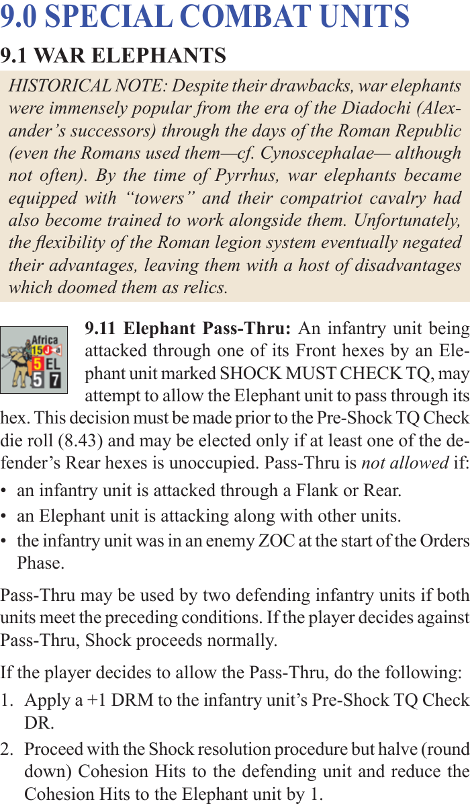
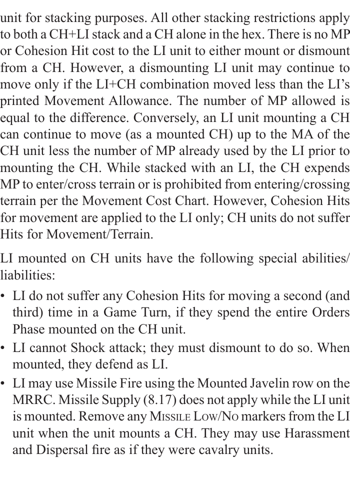
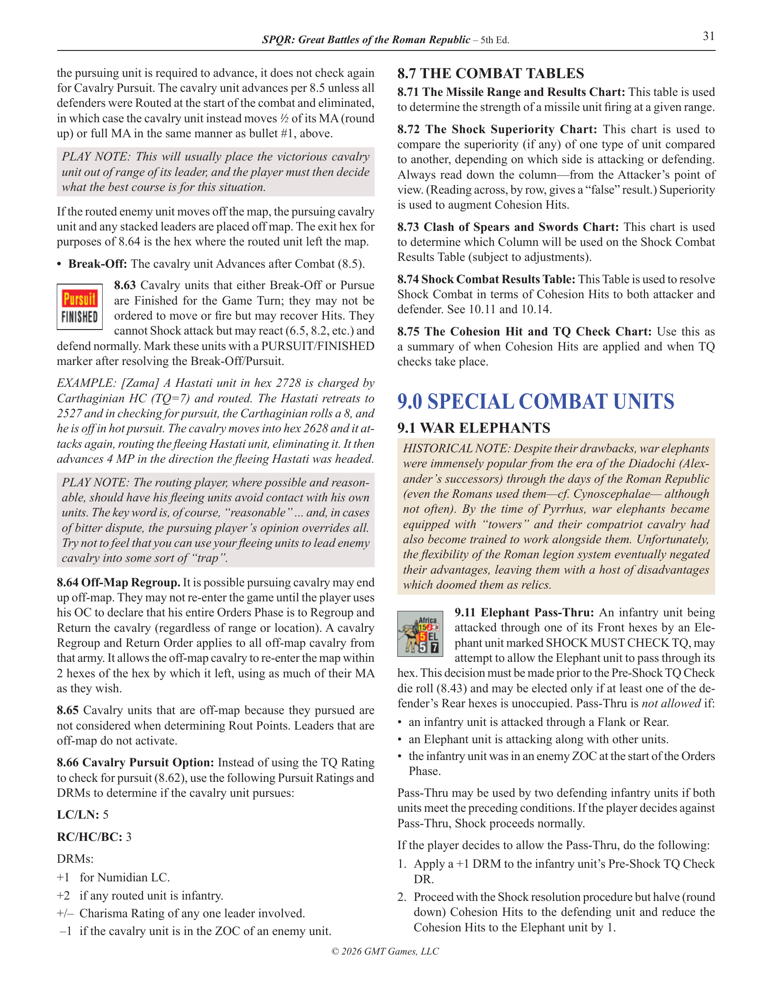
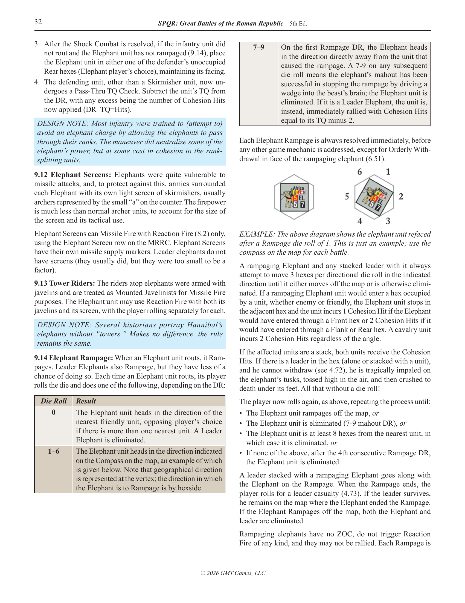
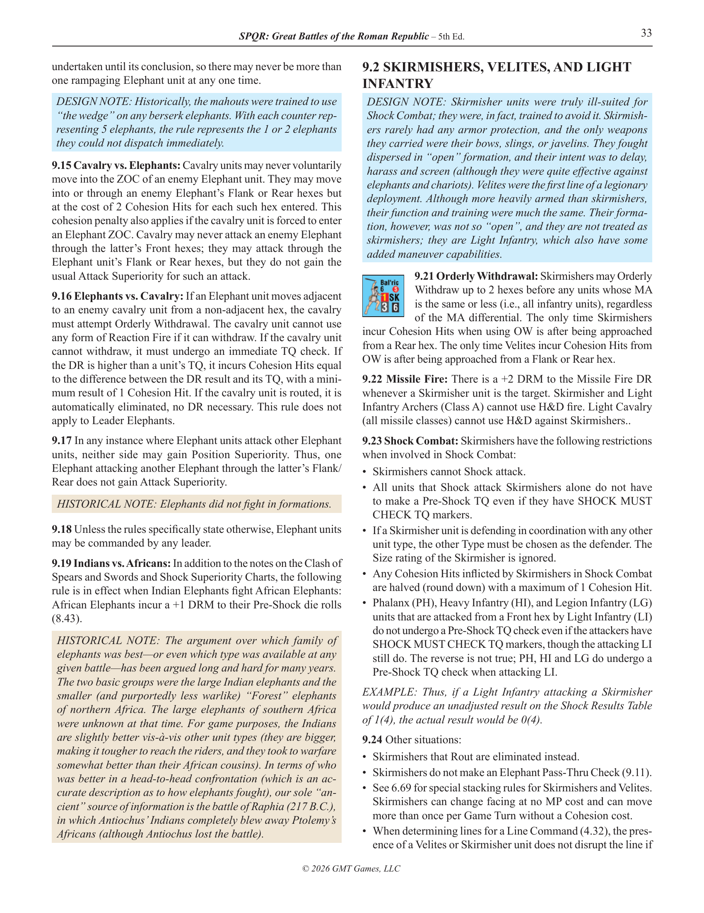
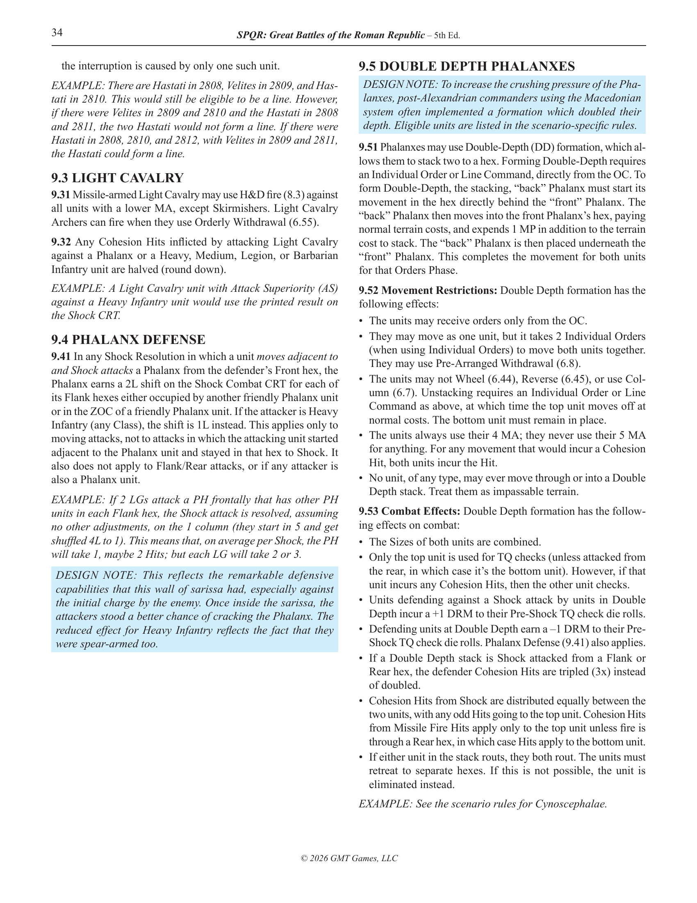
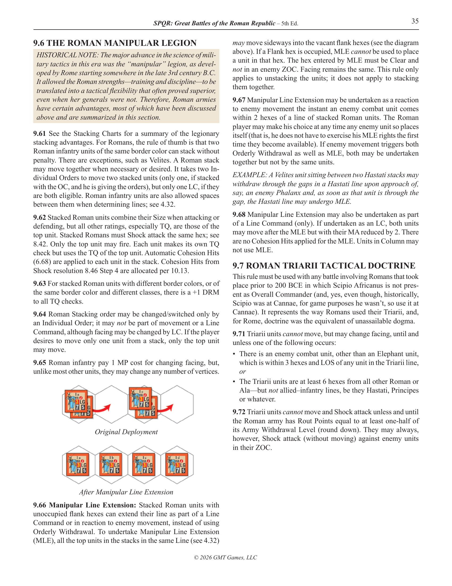
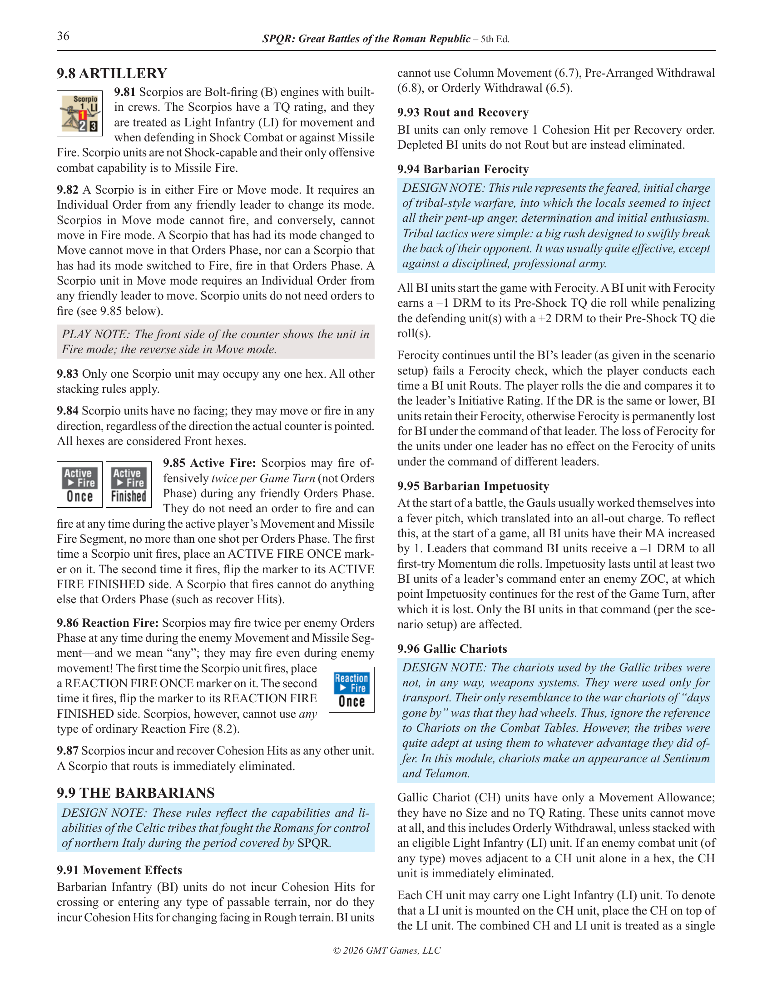
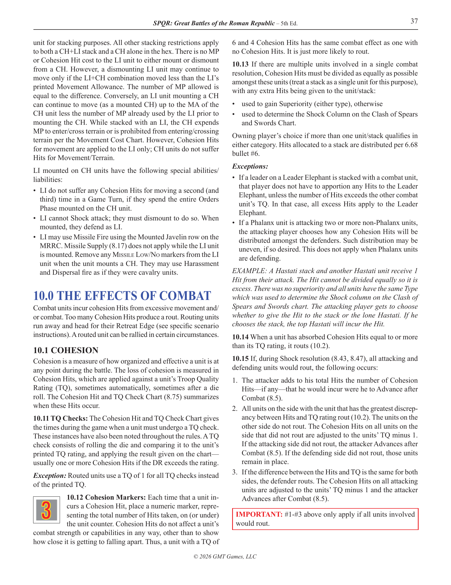

Prywatny materiał źródłowy. Sprawdzenie dotyczy czytelności nowych renderów i granic rozdziału, bez oceny ekstrakcji. Obrazy mają 200 dpi. Kliknięcie otwiera pełny obraz.
Początek: PDF 31, prawa kolumna, nagłówek 9.0. Koniec: PDF 37, lewa kolumna, przed nagłówkiem 10.0. Pozostałe obszary tych stron to kontekst.



Tabela przechodzi z lewej do prawej kolumny; pełny obraz zachowuje obie części i diagram.



Pełny obraz zachowuje diagram i jego podpisy.


Nagłówek 10.0 i dalsza treść są poza głównym zakresem.
